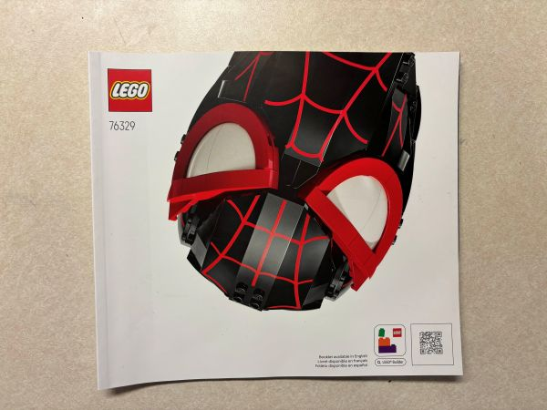
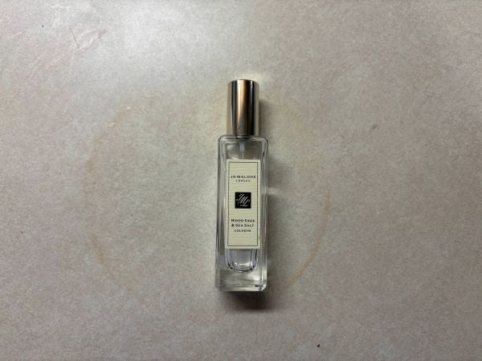
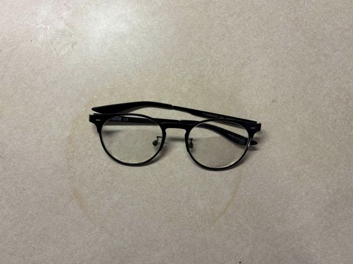
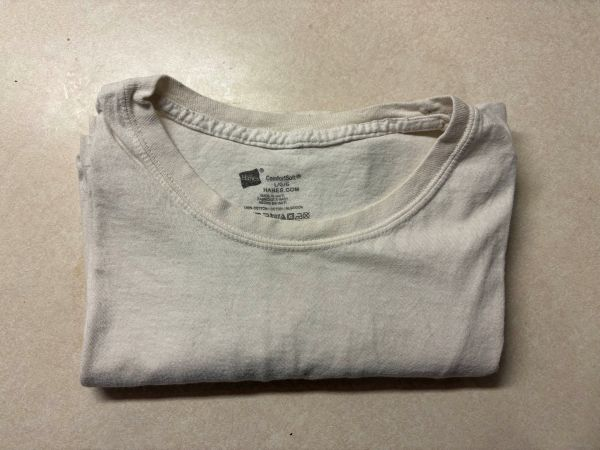
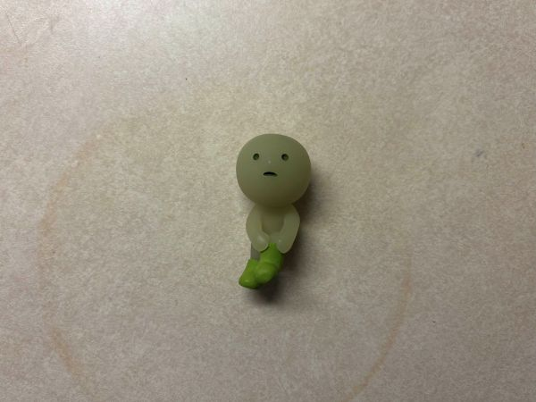

Lego Instructions
Empty Cologne
Broken Chain

Black Tie

Broken Glasses
Broken Charger

Old White T-Shirt
Smiski
Rubik's Cube

Choosing to record my trash was a simple decision, one guided by my urge to declutter my room. The hard part came when it was time to decide which items were the ones to go. You would think it would be easy– that trash is trash. At first, it was. I threw away the empty water bottles and chip bags, all of the actual trash. Week 3 was when it got hard, and I had started to be extremely mindful about what I considered for disposal.
Waste is a form of self-reflection. As I became more deliberate about what I chose to throw away, I realized that my trash revealed patterns about my habits, routines, and values. Items I hesitated to discard made me question why I was holding onto them in the first place. What value did these seemingly useless items bring to me?
By being more mindful of my discarding habits, I was forced to slow down and acknowledge my relationship with overconsumption. What began as a practical effort to clean my messy dorm room became an exercise in material awareness, revealing how important my choices around waste are.
This week, I found myself struggling to determine what I considered trash. Though I value a lot of the items that I am throwing away, I needed to consider their purpose. Do these items still serve me? Why am I still holding onto them? Maybe it is time to no longer live in the past and get rid of some things that I have been so desperately clinging to for so many years. Therefore, I decided to take a big step and change the way I approached this. It was no longer about just cleaning my room, but about being mindful of the things that I had and knowing when to let go.
This group of items includes all of the items that I have zero use for. The items are as follows: a broken chain, an old pair of glasses, and a broken charger. I got the chain in a three-pack from Amazon. I still use one of them, lost the other, and this one broke during one of my dance practices. For some reason, it has been sitting with the rest of my jewelry this whole time. As for the glasses, I used to use them when I couldn’t find the pair I currently use… until I didn't notice them on the floor next to my dresser. I crushed them under my foot, and now they do not sit on my face correctly. Lastly, my mom gave me a computer charger to replace my other one, but lo and behold, the one she gave me didn’t work at all. So, I might as well get rid of all these things, since I don’t use them anyway!
Next, I decided to get rid of some trinkets and mementos that were taking up unnecessary space. These items include: LEGO instructions, an empty bottle of cologne, a duplicate Smiski, and a Rubik’s Cube. I got the Miles Morales Spider-Man LEGO set for my birthday from my sister and her boyfriend. I built the LEGOs, but no longer have a use for the instructions. I got rid of my other instructions, including the Infinity Gauntlet, the Iron Spider-Man, and Peter Parker's mask, so I should do the same with this one.I got the cologne from my friends as a housewarming, and a year later, I’ve used it up. I recently replaced it with another fragrance, and no longer need the bottle. Third, I pulled a duplicate of a Smiski that I already had, and I’ve kept it just for the fun of things. After considering it further, someone else would definitely house it better. The last item in this group is the Rubik’s Cube I got as a kid. It has become a decoration, as it lacks the smoothness it used to have. Parting with these items definitely hit the nostalgia factor, but I do want to grow up a little bit.
The last group of items includes some old clothes that sit at the back of my closet. One of the items is a white T-shirt. I’ve had this shirt for years, and it was deemed a “sleep only” shirt about two years ago. I don’t even use it for sleep anymore! The other is a black tie from H&M. I’ve had it since my sophomore year of high school, but I haven’t used it in a few years. I got a nicer tie, so this one hides at the bottom of my accessories. These items have definitely served their purpose, and it’s time to let go of them.
To be created..
Thank you again for coming back each week to see what new trash I’m getting rid of! Though I threw away things that no longer served me, it was upsetting to let go of things I’d cherished for so long. I hope you continue to learn from this, just as much as I do, and I’m excited to see what’s in store for next week! Have a good one, see you soon!